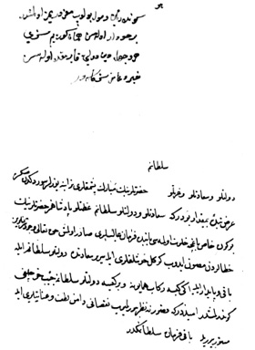

Belge 8: Veziriâzam ‘arzı
Belge 8
“Huwa
Devletlü ve sa’âdetlü ve ‘izzetlü sultanım hazretlerinin mübârek paşmakları türâbına yüzler sürdükten sonra ‘arz-ı bende-i bî-mikdâr budur ki:
Sa’âdetlü ve devletlü sultanım ‘azametlü pâdişah hazretlerinin bugün Hâs-Bağçe[de] halvet olması bâbında fermân-i ‘alîleri sâdır olmuş; Hakk ta’âlâ vücûd-i şerîflerin hatâlardan masun idüb gönül hoşlukları ile serîr-i sa’âdette devletlü sultanım ile bâkî ve pâyidâr eyliye.
İki kîse rikâb-i hümâyûna ve bir kîse devletlü Sultanıma ceyb harçlığı gönderilmişdir; ümmîddir ki kusûruna nazar buyrulmayub noksânı dâmen-i lutf u ‘inâyetleri ile mestûr buyrula,
Bâkî fermân sultanımındır.”
H. H. Kösem Sultan’ın cevabı:
“Gönderilen vusûl bulup manzûrumuz olmuşdur, berhudâr olasın; hemân göreyim sizi, her vechile dîn [ü] devleti kayırmakda olasın, hayır du’âmız sizinledir.”
Yorum:
1. Belge herhalde Kösem Sultan’a aittir, ‘arz üzerine yazı onundur, daha önceki yazılarıyla karşılaştırırsak buna kuşku kalmaz. Belgede sa’âdetlü ve devletlü sultan, pâdişahtır. “Devletlü sultanım ile bâkî ve pâyidâr eyliye” ifadesinde iki kişi, yani pâdişah ile Kösem Sultan’a hitap olunmaktadır.
Manzûrumuz kelimesi ma’zurumuz şeklinde bozuk bir imlâ ile yazılmıştır. Sözü geçen pâdişah I. İbrahim olmalı, Hâs-Bağçe’de halvet IV. Murad’ın çocukluk dönemine ait olamaz. Belge, Vâlide Kösem Sultan’ın İbrahim’e ait özel işleri de kontrolü altında tuttuğunu göstermesi bakımından ilginçtir. Belgeyi tarihleme için bir ipucu yoktur.
2. Hâs-Bağçe’de Halvet
Hâs-Bağçe’de işret meclisinde pâdişahın yalnız yakınları nedîmler (musâhibler) ile gözlerden uzak (halvet) içki ve eğlence âlemleri, çok eskiden beri Doğu saraylarında sürüp gelen bir gelenektir. Sultan İbrahim’in özellikle bu halvet toplantılarına düşkün olduğu, vâlide sultanın meclisler düzenlediği de bilinir.35
Veziriâzam toplantının “gönül hoşluğuyla” geçmesi dileğiyle sultana hazineden iki kîse (200 bin akça) vâlideye bir kîse (100 bin akça) tahsis eder. Sultanlara hazineden verilen tahsislere Ceyb-i hümâyûn denmektedir. Veziriâzam tahsisler yetmezse kusûra bakmayın diye özür diler.
Kösem’in el yazısıyla, teşekkür ve veziriâzama güveni ifade edilmiştir.
35 Ayrıntılar için bkz. H. İnalcık, Hâs-Bağçede ‘Ayş u Tarab, Nedimler, Şâirler, Mutribler, İstanbul, 2011, 204-205.